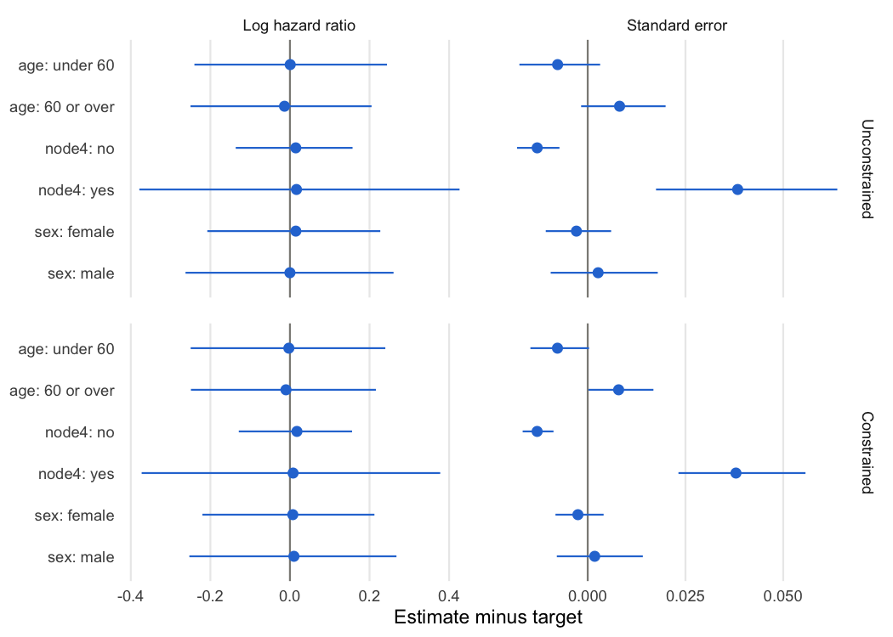
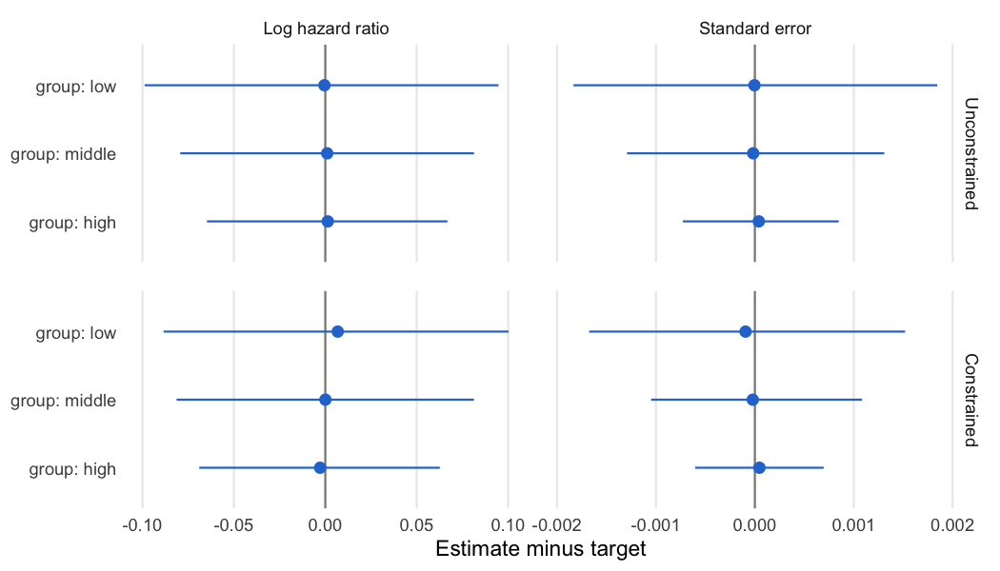

Show code
colon_reps <- 2000L # Full scale: 2000 sampled datasets per sampler.
simulated_datasets <- 50L # Full scale: 50 simulated datasets.
simulated_patients <- 10000L # Full scale: 10000 patients per simulated dataset.
simulated_reps <- 200L # Full scale: 200 sampled datasets per simulated dataset and sampler.Rendered on 2026-11-19 with retrogroup 0.0.1.9000 at
commit 1456151.
Purpose
vignette("sampling", package = "retrogroup") claims that
sampled datasets reproduce the subgroup log hazard ratios on average.
This vignette checks that claim for
group_sample_unconstrained() and
group_sample_constrained(), and it also checks how well the
sampled datasets reproduce the standard errors of the log hazard
ratios.
Method
Each benchmark starts from a patient-level dataset whose true
subgroups are known. For each subgroup level,
group_analysis_summary() fits the Cox model
survival::coxph(Surv(time, event) ~ treatment) to the
patients in that level, and the estimated log hazard ratio is the target
for that level. We then hide the true subgroups and give the sampler
only the summary statistics. The sampler imputes the subgroups, and
group_analysis_summary() fits the same Cox model to the
patients in each imputed level. Over many sampled datasets, the mean log
hazard ratio in each imputed level should match its target.
We run two versions of this experiment:
-
Colon cancer example. The 619 patients of
group_example_patient()with the target log hazard ratios ingroup_example_summary(). These are real data, so this example shows how the samplers perform in a realistic setting where the proportional hazards model behindgroup_analysis_probability()may not hold exactly. -
Simulated example. Datasets of 10000 patients each,
with one subgroup variable of three levels, log hazard ratios \((-0.8, 0, 0.5)\), and prevalences \((0.3, 0.3, 0.4)\). The data-generating
model agrees with the model that
group_analysis_probability()uses for the subgroup probabilities, so this example shows how the samplers perform when that model is correct. Any remaining difference from the targets is due to the samplers, not to model misspecification.
Each experiment reports a table of targets, means over the sampled datasets, and their differences (mean minus target). Each figure shows the difference between a sampled dataset’s estimate and its target: points are means, and bars span the central 95% of sampled datasets.
Show code
samplers <- list(
Unconstrained = group_sample_unconstrained,
Constrained = group_sample_constrained
)
quantities <- c(
"Log hazard ratio" = "log_hazard_ratio",
"Standard error" = "standard_error"
)
# Estimates from repeated calls to one sampler on one dataset:
# one row per sampled dataset, subgroup level, and quantity.
sample_estimates <- function(sampler, data, reps) {
summary <- data$summary
variables <- unique(summary$variable)
key <- paste(summary$variable, summary$level)
# Array of estimates: subgroup level x quantity x sampled dataset.
fits <- replicate(reps, {
sample <- sampler(data$patient, summary)
estimates <- group_analysis_summary(sample, variables)
rows <- match(key, paste(estimates$variable, estimates$level))
as.matrix(estimates[rows, quantities])
})
subgroup <- paste0(summary$variable, ": ", summary$level)
rows <- lapply(names(quantities), \(quantity) {
data.frame(
subgroup = factor(subgroup, levels = subgroup),
quantity = factor(quantity, levels = names(quantities)),
target = summary[[quantities[[quantity]]]],
estimate = c(fits[, quantities[[quantity]], ])
)
})
do.call(rbind, rows)
}
# Benchmark every sampler on the same list of datasets.
# Returns one row per sampler, subgroup level, and quantity.
benchmark <- function(datasets, reps) {
estimates <- lapply(names(samplers), \(name) {
estimates <- lapply(
datasets,
\(data) sample_estimates(samplers[[name]], data, reps)
)
cbind(
sampler = factor(name, levels = names(samplers)),
do.call(rbind, estimates)
)
})
estimates <- do.call(rbind, estimates)
estimates$difference <- estimates$estimate - estimates$target
out <- stats::aggregate(
cbind(target, estimate, difference) ~ subgroup + quantity + sampler,
data = estimates,
FUN = mean
)
interval <- stats::aggregate(
difference ~ subgroup + quantity + sampler,
data = estimates,
FUN = stats::quantile,
probs = c(0.025, 0.975)
)
out$lower <- interval$difference[, 1L]
out$upper <- interval$difference[, 2L]
out
}
simulate_dataset <- function(n) {
beta <- c(-0.8, 0, 0.5)
levels <- c("low", "middle", "high")
treatment <- stats::rbinom(n, 1L, 0.5)
x <- sample.int(3L, n, replace = TRUE, prob = c(0.3, 0.3, 0.4))
event_time <- stats::rexp(n, 0.1 * exp(beta[x] * treatment))
censor_time <- stats::runif(n, 0, 20)
patient <- tibble::tibble(
treatment = treatment,
time = pmin(event_time, censor_time),
event = as.integer(event_time <= censor_time),
group = factor(levels[x], levels = levels)
)
summary <- group_analysis_summary(patient, "group")
patient$group <- NULL
list(patient = patient, summary = summary)
}
# Show 3 decimal places, but use 3 significant figures for nonzero values
# that would otherwise round to zero, in scientific notation.
format_number <- function(x) {
ifelse(
x != 0 & round(x, 3L) == 0,
formatC(x, digits = 2L, format = "e"),
formatC(x, digits = 3L, format = "f")
)
}
show_table <- function(x) {
hr <- x[x$quantity == "Log hazard ratio", ]
se <- x[x$quantity == "Standard error", ]
knitr::kable(
data.frame(
Sampler = hr$sampler,
Subgroup = hr$subgroup,
`Target log HR` = format_number(hr$target),
`Mean log HR` = format_number(hr$estimate),
`Log HR difference` = format_number(hr$difference),
`Target SE` = format_number(se$target),
`Mean SE` = format_number(se$estimate),
`SE difference` = format_number(se$difference),
check.names = FALSE
),
align = c("l", "l", rep("r", 6L)),
row.names = FALSE
)
}
show_plot <- function(x) {
ggplot(x, aes(x = difference, xmin = lower, xmax = upper, y = subgroup)) +
geom_vline(xintercept = 0, color = "#8c8b86") +
geom_pointrange(color = "#2a78d6", size = 0.4) +
facet_grid(sampler ~ quantity, scales = "free_x") +
scale_y_discrete(limits = rev) +
labs(x = "Estimate minus target", y = NULL) +
theme_minimal(base_size = 11) +
theme(
panel.grid.minor = element_blank(),
panel.grid.major.y = element_blank(),
panel.spacing = grid::unit(1, "lines")
)
}Colon cancer example
We draw 2000 sampled datasets with each sampler.
colon <- list(
patient = group_data_patient(
group_example_patient(),
arm = "arm",
treatment = "Lev+5FU",
time = "time",
event = "event"
),
summary = group_data_summary(
group_example_summary(),
variable = "variable",
level = "level",
patients = "patients",
log_hazard_ratio = "log_hazard_ratio",
standard_error = "standard_error"
)
)
set.seed(1)
colon_results <- benchmark(list(colon), reps = colon_reps)| Sampler | Subgroup | Target log HR | Mean log HR | Log HR difference | Target SE | Mean SE | SE difference |
|---|---|---|---|---|---|---|---|
| Unconstrained | age: under 60 | -0.169 | -0.169 | 0.001 | 0.178 | 0.170 | -0.008 |
| Unconstrained | age: 60 or over | -0.546 | -0.560 | -0.014 | 0.160 | 0.168 | 0.008 |
| Unconstrained | node4: no | -0.417 | -0.402 | 0.015 | 0.153 | 0.140 | -0.013 |
| Unconstrained | node4: yes | -0.312 | -0.296 | 0.016 | 0.190 | 0.228 | 0.038 |
| Unconstrained | sex: female | -0.147 | -0.133 | 0.015 | 0.162 | 0.159 | -0.003 |
| Unconstrained | sex: male | -0.656 | -0.656 | -8.33e-05 | 0.179 | 0.181 | 0.003 |
| Constrained | age: under 60 | -0.169 | -0.172 | -0.003 | 0.178 | 0.170 | -0.008 |
| Constrained | age: 60 or over | -0.546 | -0.556 | -0.010 | 0.160 | 0.168 | 0.008 |
| Constrained | node4: no | -0.417 | -0.399 | 0.017 | 0.153 | 0.140 | -0.013 |
| Constrained | node4: yes | -0.312 | -0.305 | 0.008 | 0.190 | 0.228 | 0.038 |
| Constrained | sex: female | -0.147 | -0.140 | 0.007 | 0.162 | 0.160 | -0.003 |
| Constrained | sex: male | -0.656 | -0.646 | 0.010 | 0.179 | 0.181 | 0.002 |

Colon cancer example: estimate minus target for each subgroup level, quantity, and sampler. Points are means over the sampled datasets, and bars span quantile intervals of the sampled datasets. A point on the vertical line at zero means the sampled datasets reproduce the target on average.
Simulated example
We simulate 50 datasets and draw 200 sampled datasets from each with each sampler. Each estimate is compared with the target of the simulated dataset it was sampled from, and the results pool all simulated datasets.
set.seed(2)
simulated <- replicate(
simulated_datasets,
simulate_dataset(simulated_patients),
simplify = FALSE
)
simulated_results <- benchmark(simulated, reps = simulated_reps)| Sampler | Subgroup | Target log HR | Mean log HR | Log HR difference | Target SE | Mean SE | SE difference |
|---|---|---|---|---|---|---|---|
| Unconstrained | group: low | -0.805 | -0.806 | -4.71e-04 | 0.057 | 0.057 | -4.02e-06 |
| Unconstrained | group: middle | -0.003 | -0.002 | 0.001 | 0.049 | 0.049 | -1.71e-05 |
| Unconstrained | group: high | 0.497 | 0.499 | 0.001 | 0.040 | 0.040 | 3.96e-05 |
| Constrained | group: low | -0.805 | -0.799 | 0.007 | 0.057 | 0.056 | -9.40e-05 |
| Constrained | group: middle | -0.003 | -0.003 | 6.27e-05 | 0.049 | 0.049 | -2.11e-05 |
| Constrained | group: high | 0.497 | 0.494 | -0.003 | 0.040 | 0.040 | 4.62e-05 |

Simulated example: estimate minus target for each subgroup level, quantity, and sampler, pooled over all simulated datasets. Points are means over the sampled datasets, and bars span quantile intervals of the sampled datasets. A point on the vertical line at zero means the sampled datasets reproduce the target on average.